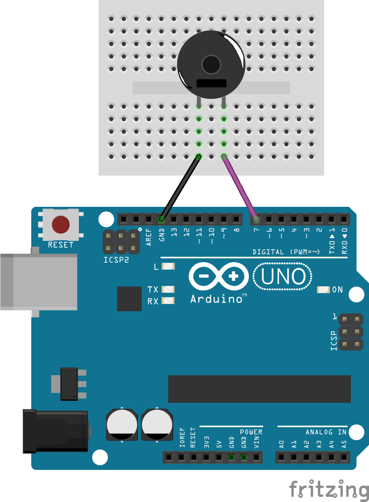
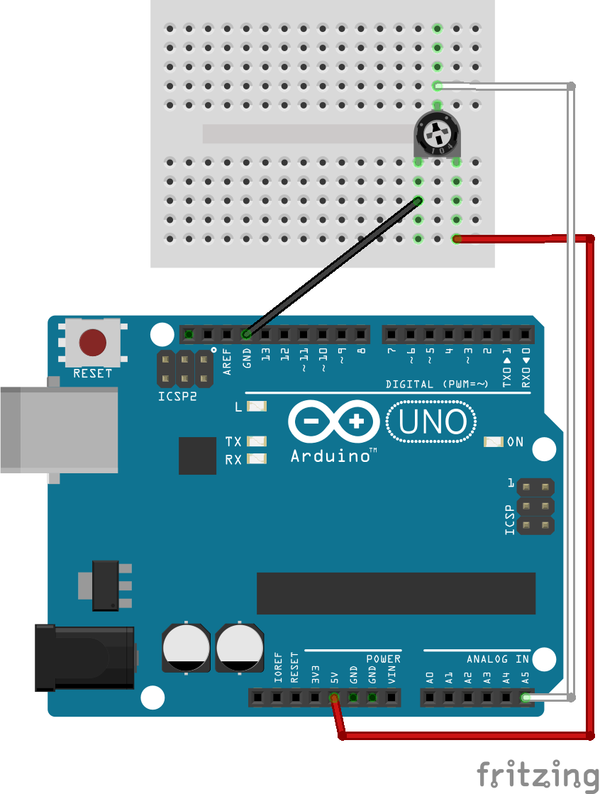
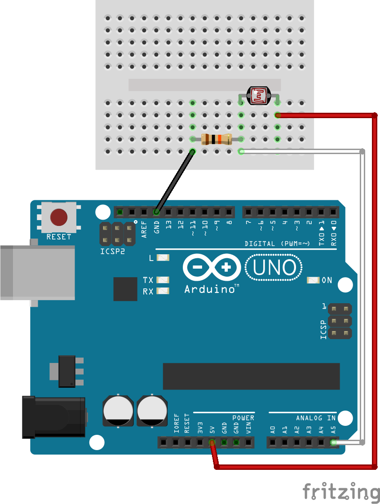
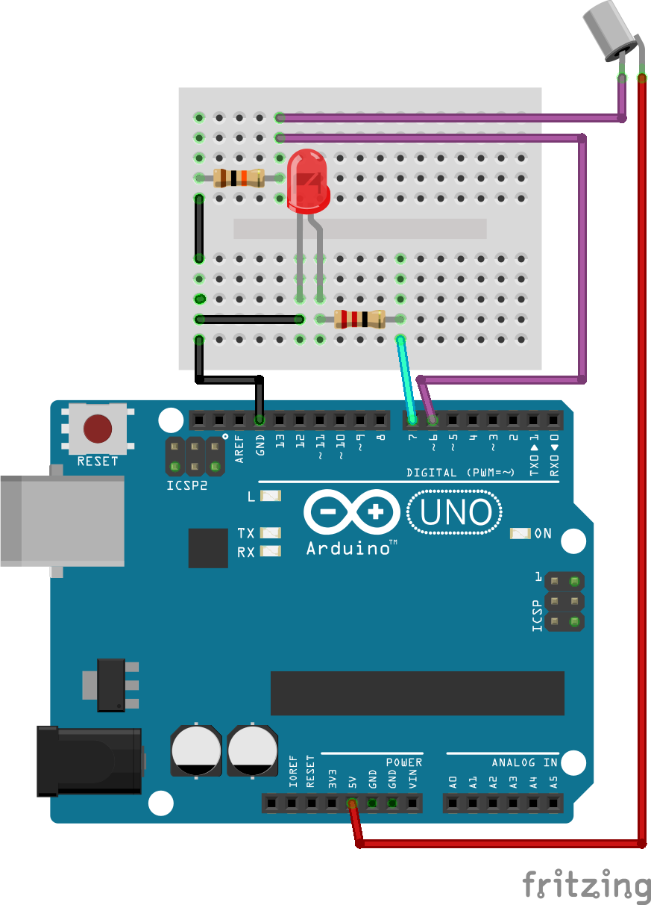
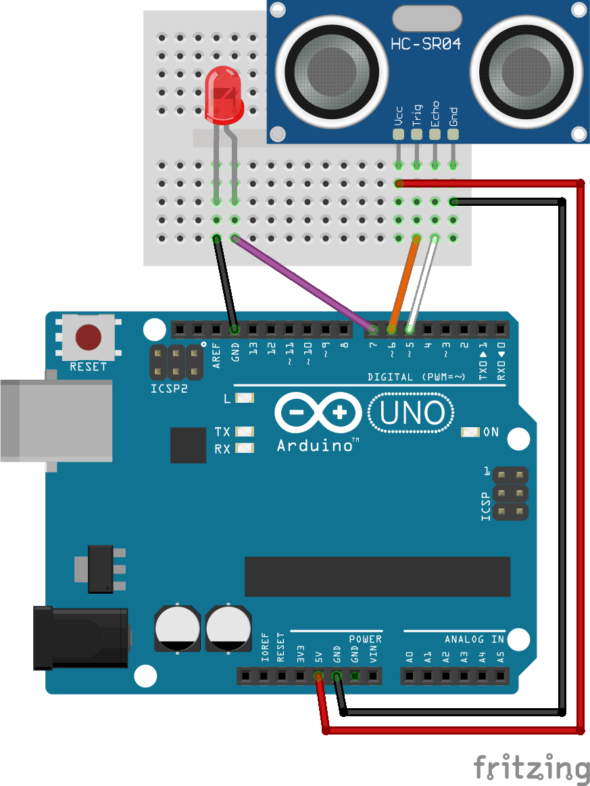

Arduino Tutorial
Vormerkung
Dieses Dokument erhebt kein Recht auf Vollständigkeit oder Korrektheit.
An einigen Stellen mag es inkonsistent sein
Trotzdem viel Spaß mit Arduino!
Genereller Aufbau

Ein Arduino besitzt viele Pins welche bestimmt Eigenschaften haben.
Hier ein kurzer Überblick:
- Der pin GND steht für Ground und ist wie der Minuspol
- Die pins 3.5V und 5V sind wie Pluspole
- Die pins 0 bis 13 (im Bild oben) sind Digitale Pins
- Bei diesen pins kann die Stromspannung an und ausgeschalten werden
- Diese pins können auch auslesen ob eine Stromspannung anliegt
- Die pins A0 bis A5 (im Bild unten) sind Analoge Pins
- Diese pins können auslesen wie groß eine Stromspannung ist die anliegt
void setup(){
}
void loop(){
}
Ein Arduino Programm besteht immer aus mindestens diesem Code.
Jedes Programm beginnt zwischen den geschwungenen Klammern nach setup.
Dieser Code wird einmal beim start des Programms ausgefürt.
Der Code zwischen den geschwungenen Klammern nach loop wird immer wieder
ausgeführt.
Eine LED ansteuern
|

|
void setup(){
pinMode(7, OUTPUT);
}
void loop(){
delay(1000);
digitalWrite(7, HIGH);
delay(1000);
digitalWrite(7, LOW);
}
|
|
In diesem Beispiel wird eine LED jede Sekunde an und aus gemacht.
Dazu wird in setup mit pinMode dem Arduino
gesagt, dass der pin 7 ein OUTPUT ist.
Dadurch können wir ab jetzt den Strom an pin 7 mit digitalWrite an (HIGH) und ausschalten
(LOW).
Mit delay können wir dem Arduino sagen, dass er eine bestimmte Anzahl an
Milisekunden warten soll.
Baue die Schaltung nach und ändere die delay's im Code und schau was
passiert.
Zwei LED's ansteuern
|

|
void setup(){
pinMode(6, OUTPUT);
pinMode(7, OUTPUT);
}
void loop(){
delay(1000);
digitalWrite(6, HIGH);
digitalWrite(7, LOW);
delay(1000);
digitalWrite(6, LOW);
digitalWrite(7, HIGH);
}
}
|
|
In diesem Beispiel werden zwei LED's abwechselnd jede Sekunde an und aus gemacht.
Dazu wurde das Beispiel von davor leicht abgeändert.
Hier wird einfach ein weiterer pin (
6) zu einem
OUTPUT gemacht.
Jetzt können wir die beiden LED's abwechselnd mit
digitalWrite an und
ausmachen.
Baue die Schaltung nach und ändere den Code ab, sodass diese Lichtfolge entsteht:
Buzzer ansteuern
|

|
void setup(){
pinMode(7, OUTPUT);
tone(7, 880);
delay(1000);
noTone(7);
}
void loop(){
}
|
|
In diesem Beispiel wird mit einem passiven Buzzer der Ton A
5 für eine Sekunde gespielt.
Baue die Schaltung nach und ändere den Code ab, sodass eine Melodie abgespielt wird.
Dafür braucht man eine
Liste von Frequenzen
Knopf Eingabe
|
 (Widerstand: 10 kΩ)
(Widerstand: 10 kΩ)
|
void setup(){
pinMode(7, OUTPUT);
pinMode(8, INPUT);
}
void loop(){
if(digitalRead(8) == HIGH){
digitalWrite(7, HIGH);
delay(3000);
digitalWrite(7, LOW);
}
}
|
|
In diesem Beispiel leuchtet eine LED drei Sekunden lang, wenn man den Knopf drückt.
Dazu wird in setup dem Arduino gesagt, dass pin 8 ein INPUT ist
Jetzt können wir mit digitalRead herausfinden, ob eine Stromspannung an
diesem pin ist.
Mit if können wir prüfen ob etwas bestimmtes zutrifft und jenachdem
bestimmten Code ausführen.
In diesem Beispiel wir die Stromspannung an dem pin ausgelesen und mit ==
geprüft ob diese gleich HIGH ist.
Falls ja wird die LED an pin 7 für drei Sekunden an und dann wieder aus
gemacht.
Wenn der Knopf aktiv ist, liegt HIGH am pin.
Wenn der Knopf nicht aktiv ist, liegt LOW am pin.
Es ist wichtig, dass LOW anliegt, da der Arduino nicht mit Zwischenwerten
klar kommt.
Um dieses Verhalten zu ermöglichen muss sowohl HIGH als auch LOW mit dem pin verbunden sein.
Damit es nicht zu einem Kurzschluss kommt muss man einen großen Widerstand zwischen die beiden Pole
machem.
Baue die Schaltung nach und ändere den Code ab, so dass die LED zweimal aufblinkt beim drücken.
Schwere Aufgabe:
Erweitere die Schaltung um noch einen Knopf.
Lass eine andere Lichtfolge abspielen, wenn der andere Knopf gedrückt wird.
Mehr zu if
if(...){
...
}else{
...
}
Mit if wird eine Abzweigung im Programm erstellt.
Wenn die Bedingung zutrifft (wahr ist), dann wird der Code zwischen den geschwungenen Klammern
ausgeführt.
Falls die Bedingung nicht zutrifft wird dieser Code übersprungen.
Mit einem else kann man nach einem if
einen weiteren Codeblock schreiben.
Dieser wird nur dann ausgeführt, wenn die Bedingung nicht stimmt sonst wird dieser Code übersprungen.
while-Schleife
Mit while wird eine Schleife im Programm erstellt.
Solange die Bedingung zutrifft (wahr ist) wird der Code zwischen den geschwungenen Klammern ausgeführt.
Falls die Bedingung nicht zutrifft wird dieser Code übersprungen.
Bei while gibt es kein else.
Eine while-Schleife kann dazu führen, dass Endlos-Schleifen entstehen, weil
die Bedingung nie Falsch wird.
Eine Endlos-Schleife, führt dazu, dass nur der Code des while ausgeführt
wird und sonst keiner.
Analoger Ausgang
|
(pins die analogWrite benutzen können sind mit ~
markiert)
|
void setup(){
pinMode(5, OUTPUT);
}
void loop(){
analogWrite(5, 255);
delay(1000);
analogWrite(5, 125);
delay(1000);
analogWrite(5, 0);
delay(1000);
}
|
|
In diesem Beispiel wird eine LED verschieden stark zum Leuchten gebracht.
Es wird dafür analogWrite benutzt.
Anders als digitalWrite kann analogWrite
Werte zwischen 0 und 255 annehmen.
Baue die Schaltung nach und ändere einige Werte im Code und schau was passiert.
Variablen
|
|
int helligkeit;
void setup(){
pinMode(5, OUTPUT);
helligkeit = 0;
}
void loop(){
analogWrite(5, helligkeit);
delay(100);
helligkeit = helligkeit + 1;
if(helligkeit == 255){
helligkeit = 0;
}
}
|
|
In diesem Beispiel wird eine LED langsam heller und heller gestellt.
Sobald die LED komplett scheint wird die Helligkeit wieder zurückgesetzt.
Hierzu wird eine Variable verwendet.
Die Variable wird hier verwendet um die Helligkeit immer wieder zu einem anderen Wert zu setzen.
Mit helligkeit = 0; wird der Wert der
Variablen zu 0 gesetzt.
Mit helligkeit = helligkeit + 1; wird helligkeit auf den Wert von helligkeit+ 1 gesetzt.
Oder kurz gesagt es wird 1 dazu gerechnet.
Die Variable setzen wir auf 0,wenn sie den Wert 255 erreicht,
da die LED nachdem sie komplett leuchtet wieder neu anfangen soll.
Baue die Schaltung nach und ändere den Code ab,
sodass die LED immer dunkler wird und dann wieder aufleuchtet (Gegenteil).
Schwere Aufgabe:
Erweitere das Program um noch eine Variable.
Lass die LED langsam aufleuchten und wieder langsam dunkel werden.
Tipp:
Die zweite Variable sollte verwendet werden um die erste Variable zu ändern.
Wenn das maximum oder minimum erreicht wird sollte die Helligkeit nicht zurückgesetzt werden,
sonder die
zweite Variable verwendet werden.
Potentiometer Eingabe
|
|
int helligkeit;
void setup(){
pinMode(7, OUTPUT);
}
void loop(){
helligkeit = analogRead(A5);
analogWrite(7, helligkeit);
}
|
|
In diesem Beispiel wird ein Potentiometer verwendet um eine LED heller und dunkler zu stellen.
Dazu wird der Ausgang vom Potentiometer mit einen analogen Pin verbunden.
Mit analogRead wird der Wert ausgelesen.
Dieser Wert wird gespeichert und mit analogWrite wird dann die helligkeit
der LED gesetzt.
Baue die Schaltung nach und teste diese.
Erweitere die Schaltung danach um eine zweite LED die heller wird wenn die erste dunkler wird und
umgekehrt.
Tipp:
Der Wert von helligkeit liegt zwischen 0 und
255.
Mit 255 - helligkeit erhält man den Wert zu
dem die andere LED gesetzt werden muss.
Serieller Monitor
|
|
void setup(){
Serial.begin(9600);
Serial.println("Hello World!");
Serial.println("Die Zahl 42:");
Serial.println(42);
}
void loop(){
}
|
|
In diesem Beispiel wird mit Serial.begin(9600); eine Verbindung zum Computer
hergestellt.
Sobald die Verbindung hergestellt wurde, kann man mit Serial.println Text, Zhalen oder Variablen
ausgeben.
Mit dem Monitor hat man also zugriff auf die sonst unbekannten Variablen des Arduino.
Ändere den Code ab und schau was passiert.
Was passiert, wenn man Serial.println in loop verwendet?
Variablen Ausgabe
|

|
int drehung;
void setup(){
Serial.begin(9600);
}
void loop(){
drehung = analogRead(A5);
Serial.println(drehung);
delay(100);
}
|
|
In diesem Beispiel wird der Serielle Monitor verwendet, um die Drehung eines Potentiometers auszugeben.
Baue die Schaltung nach und teste diese.
LDR (Light-Dependant-Resistor)
|

(Widerstand: 10 kΩ)
|
int helligkeit;
void setup(){
Serial.begin(9600);
}
void loop(){
helligkeit = analogRead(A5);
Serial.println(helligkeit);
delay(100);
}
|
|
In diesem Beispiel wird der Serielle Monitor verwendet, um die Helligkeit, die ein LDR abbekommt,
auszugeben.
Baue die Schaltung nach und teste diese.
Schreibe den maximal und minimal Wert auf.
Erweitere die Schaltung um eine LED, welche leutet, wenn der Wert unter der Hälfte zwischen maximal und
minimal Wert liegt.
Tipp:
Verwende ein if und < (kleiner als).
Neigungsschalter
|

(Widerstand: 10 kΩ, 220Ω)
|
void setup(){
pinMode(6, INPUT);
pinMode(7, OUTPUT);
}
void loop(){
if(digitalRead(6) == HIGH){
digitalWrite(7, HIGH);
delay(3000);
digitalWrite(7, LOW);
}
}
|
|
In diesem Beispiel wird ein Neigungsschalter verwendet um eine LED zum leuchten zu bringen.
Wenn der Neigungsschalter aktiv ist, liegt HIGH am pin.
Wenn der Neigungsschalter nicht aktiv ist, liegt LOW am pin.
Es ist wichtig, dass LOW anliegt, da der Arduino nicht mit Zwischenwerten
klar kommt.
Um dieses Verhalten zu ermöglichen muss sowohl HIGH als auch LOW mit dem pin verbunden sein.
Damit es nicht zu einem Kurzschluss kommt muss man einen großen Widerstand zwischen die beiden Pole
machem.
Baue die Schaltung nach und lass eine andere Lichtfolge aufblinken.
Vergleiche die Schaltung mit der eines Knopfs.
Abstandsmesser
|

|
int cmAbstand;
void setup(){
pinMode(5, INPUT);
pinMode(6, OUTPUT);
pinMode(7, OUTPUT);
}
void loop(){
digitalWrite(6, HIGH);
delayMicroseconds(1000);
digitalWrite(6, LOW);
cmAbstand = pulseIn(5, HIGH) / 58.0;
if(cmAbstand < 10){
digitalWrite(7, HIGH);
delay(100);
digitalWrite(7, LOW);
}
}
|
|
In diesem Beispiel wird der Abstand in cm ausgelesen.
Wenn dieser Abstand weniger als 10cm ist, dann soll die LED kurz aufflackern.
(Der Abstand kann nicht immer korrekt ausgelesen werden, wenn dieser zum Beispiel zu groß ist)
Baue die Schaltung nach und teste wie gut der Sensor den Abstand messen kann.
Füge weitere LED's hinzu welche ab einem bestimmten abstand anfangen zu leuchten.
erstellt 2020 von Anton Böhler